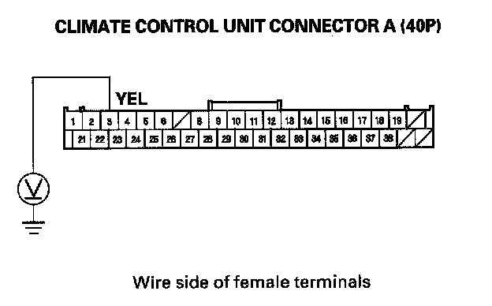
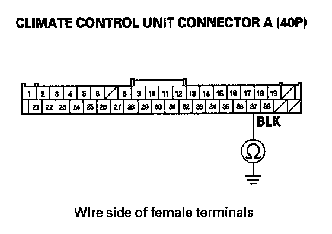
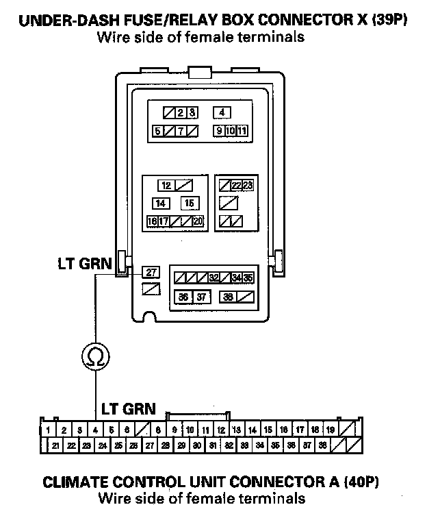

Climate Control Unit Troubleshooting
Climate Control Unit Troubleshooting1. Check the No. 30 (10 A) fuse in the under-dash fuse/relay box.
Is the fuse OK?
YES - Go to step 2.
NO - Replace the fuse, and recheck. If the fuse blows again, check for a short in the No. 30 (10 A) fuse circuit.
2. Turn the ignition switch ON (II).

3. Measure the voltage between climate control unit connector A (40P) terminal No. 3 and body ground.
Is there battery voltage?
YES - Go to step 4.
NO - Repair open in the wire between the No. 30 (10 A) fuse in the under-dash fuse/relay box and the climate control unit.
4. Turn the ignition switch OFF.

5. Check for continuity between climate control unit connector A (40P) terminal No. 37 and body ground.
Is there continuity?
YES - Go to step 6.
NO - Check for an open in the wire between the climate control unit and body ground. If the wire is OK, check for poor ground at G506.
6. Disconnect climate control unit connector A (40P).
7. Disconnect the under-dash fuse/relay box connector X (39P).

8. Check for continuity between under-dash fuse/relay box connector X (39P) terminal No. 27 and climate control unit connector A (40P) terminal No. 4.
Is there continuity?
YES - Check for loose wires and poor connections at climate control unit connector A (40P). If connections are good, substitute a known-good climate control unit and recheck. If the symptom/indication goes away, replace the original climate control unit.
NO - Repair open in the wire between the MICU and the climate control unit.